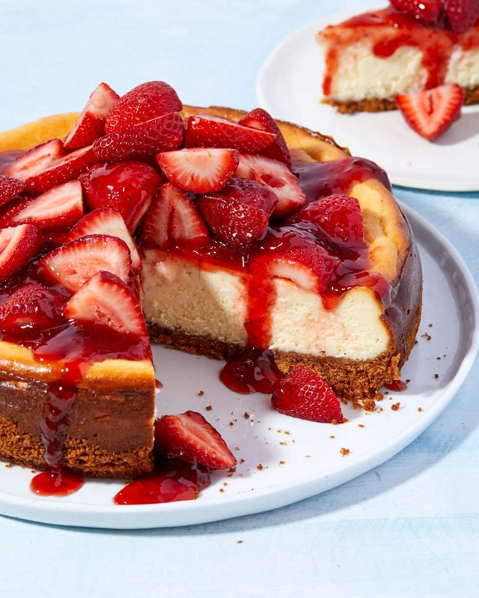

Strawberry Cheesecake
Want to give classic cheesecake an elegant (and easy!) upgrade? This strawberry topping is your answer. All you need to do is heat together strawberry preserves and lemon juice until smooth and thick then brush it over fresh strawberries on top of your cooled and beautiful cheesecake. You're going to want to make extra of this jammy topping (trust us!)>Want to give classic cheesecake an elegant (and easy!) upgrade? This strawberry topping is your answer. All you need to do is heat together strawberry preserves and lemon juice until smooth and thick then brush it over fresh strawberries on top of your cooled and beautiful cheesecake. You're going to want to make extra of this jammy topping (trust us!)>Want to give classic cheesecake an elegant (and easy!) upgrade? This strawberry topping is your answer. All you need to do is heat together strawberry preserves and lemon juice until smooth and thick then brush it over fresh strawberries on top of your cooled and beautiful cheesecake. You're going to want to make extra of this jammy topping (trust us!)>Want to give classic cheesecake an elegant (and easy!) upgrade? This strawberry topping is your answer. All you need to do is heat together strawberry preserves and lemon juice until smooth and thick then brush it over fresh strawberries on top of your cooled and beautiful cheesecake. You're going to want to make extra of this jammy topping (trust us!)>Want to give classic cheesecake an elegant (and easy!) upgrade? This strawberry topping is your answer. All you need to do is heat together strawberry preserves and lemon juice until smooth and thick then brush it over fresh strawberries on top of your cooled and beautiful cheesecake. You're going to want to make extra of this jammy topping (trust us!)>Want to give classic cheesecake an elegant (and easy!) upgrade? This strawberry topping is your answer. All you need to do is heat together strawberry preserves and lemon juice until smooth and thick then brush it over fresh strawberries on top of your cooled and beautiful cheesecake. You're going to want to make extra of this jammy topping (trust us!)
 Card Title
Card Title